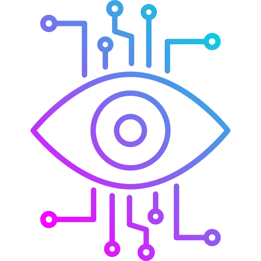
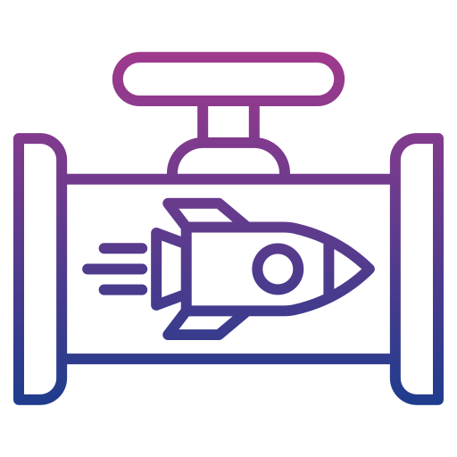

I'm Ajish (Pradeep Rajasekar), a professional AI engineer and researcher specializing in designing and
deploying
advanced AI solutions. My primary focus is to take a research-driven approach in solving the AI
irregularities where the
traditional methods fall short. This includes building scalable AI pipelines, the optimization of large
language models
(LLMs), and the development and manipulation of AI models through architectural and algorithmic
modifications.
A testament to my commitment to bridging research and real-world applications, I published and presented a
scalable
retail AI solution at the NVIDIA GTC 2025 conference in San Jose, a real-time planogram compliance system
designed for
7-Eleven stores in Taiwan.
While my full-time role as an AI Engineer and Researcher remains my primary commitment, I also collaborate
with startups
and enterprises as a freelance research engineer. I'm open to opportunities at any time as long as they're
fascinating
and have scope to learn. Consider me interested in any project or opportunity in need of another brain to
tackle a
complex AI problem ; ping me anytime.
What I’m Doing
Generative AI Solutions
Designing and implementing generative AI models for real-world
applications.
End-to-End AI Deployment
Building full-scale AI pipelines from data preprocessing to production.
LLM Optimization
Optimizing large language models for computational efficiency.
AI Freelance Engineering & Consulting
Providing end-to-end AI solutions tailored to specific business needs.
Field Expertise
Generative AI
Specialized in designing custom architectures for image inpainting and data-driven content
generation.
LLM Optimization
Expert in enhancing LLM efficiency using advanced techniques like Kolmogorov-Arnold Networks
(KAN), enabling resource-efficient deployment.

Vision AI:
Proficient in creating scalable, real-time solutions for object detection and recognition,
particularly in retail applications.
AI Deployment:
Hands-on experience with NVIDIA TAO Toolkit, TensorRT, and GCP for seamless integration across
cloud and edge environments.

End-to-End AI Development:
Comprehensive expertise in building AI pipelines from concept to production, ensuring scalability,
reliability, and impact.
Cross-Disciplinary Collaboration:
Strong ability to bridge the gap between technical development and business strategy, ensuring
solutions align with organizational goals.
info
Experience
AI Engineer
2023 — Present
President Information Corp, Taiwan
Conceptualized and implemented a real-time planogram compliance system for 7-Eleven stores, which
optimized operational efficiency and reduced error margins significantly. This innovative work was
selected as a poster presentation at NVIDIA GTC 2025, underscoring its groundbreaking impact in
retail AI.
Collaborated with NVIDIA to leverage metropolis microservices, creating generative AI pipelines
capable of seamless cloud and edge deployment, setting a new benchmark for integrated AI solutions.
Developed a high-precision consumer behavior prediction model with 95% accuracy, utilizing advanced
machine learning techniques and processing over 5 million data points to empower targeted marketing
strategies.
Software Developer
2017 — 2021
AIBS Software Solutions, India
Spearheaded the development of tailored ERP solutions that optimized manufacturing workflows and
enhanced system reliability, transforming corporate efficiency.
Engineered a robust inventory management system, resolving 95% of software discrepancies and
significantly streamlining operations for enterprise clients.
Education
Master's in Electrical Engineering
and Computer Science
National Taipei University of Technology, Taiwan
Advanced research in generative AI, culminating in a novel content and spatial-aware model for
image inpainting. This work significantly addressed challenges in limited data environments and
set a new standard for efficiency and accuracy in GAN-based systems.
Bachelor of Science in Information
Technology
Sri Ramakrishna Mission Vidyalaya College, India
Learned to code and developed a passion for technology, laying the foundation for deeper
understanding of datastructure aand algorithms.
Master's in AI
National Taipei University of Technology, Taiwan
Advanced research in generative AI, culminating in a novel content and spatial-aware model for image
inpainting. This work significantly addressed challenges in limited data environments and set a new
standard for efficiency and accuracy in GAN-based systems.
Core Expertise
Programming Languages: Python, JavaScript
Frameworks and Libraries: PyTorch, TensorFlow, Transformers, Diffusion Models
Cloud Platforms and Tools: Google Cloud Platform (GCP), Vertex AI, Deepstream
Model Development: Custom AI model training and fine-tuning, Vision AI, LLMs,
Multi-modal
AI
Generative AI: Conditional image generation, spatial and content-aware models
Edge Deployment: TensorRT, NVIDIA TAO Toolkit, real-time applications for object
detection
Mathematical Foundations: Linear Algebra, Calculus, Attention Mechanisms
Specialized Techniques: Feature extraction, vector embedding, and advanced
transformer-based architectures
Problem Domains: Object detection, recognition, and behavior prediction models
-
Portfolio
Some repositories are privated due to NDA. Please contact for more details...
And most new projects which are in progress due to constant experimentations are not updated here...
About: A Taiwan Based Bespoke AI startup focus on introducting AI in Agriculature
in Taiwan
My Contribution: Part of the poineer team as an AI engineer with focus on
research and POC planning for AI analysis with focus on crop yield prediction.
Responsibilities include:
1. Build a custom trained LLM model on Agriculture data specific to Taiwan
2. Retrival model to understand the text corpus to provide reliable info based on realtime
metric from sesnors.
3. Use the real time data from sensors as RAG input and build a pipeline to provide asistance in
maintaining the crops.
Reference:
Brock B (CEO, Future Data Systems) Website:Visit
Future
Data Syatems
MobilityZ
Huston, United States of America
About: MobilityZ Health is a digital health company specializing in
musculoskeletal (MSK) injury management. Their platform enables orthopedic specialists and primary
care physicians to remotely screen, diagnose, and monitor patients with MSK injuries through
proprietary software that incorporates telehealth technologies and automated screening tests.
My Contribution: Led the AI development for a key model within a multi-level
cascade, overseeing the entire process from research to deployment.
Responsibilities include:
1. Developed and optimized AI models for injury detection and segmentation with reliability.
2. Integrated AI solutions into the platform to enhance remote screening and monitoring
capabilities.
3. Custom model development for specific injury types and patient profiles.
Reference:Sucheshna
Patil
(CEO, MobilityZ Health) Website:Visit
MobilityZ
Research Lab (AI & Multimedia Systems)
NTUT, Taipei, Taiwan
About: A research lab at National Taipei University of Technology focusing on
mutlimedia encoding with AI intervention. And primary focus on research in Feature engineering and
algorithm optimization.
My Contribution: Part of the research team as a research assistant to professor
and vice president of the university Dr.Shih-Hsuan Yang.
Research contributions are included:
1. GAN based image inpainting with focus on content and spatial awareness.
2. Vision transformer based depth estimation for 3D scene understanding by 2D images.
3. LLM optimization with focus on KAN networks (On going research)
Reference:
Prof. Shih-Hsuan Yang (Vice President, National Taipei University of Technology) Website: Vice President S.H. Yang